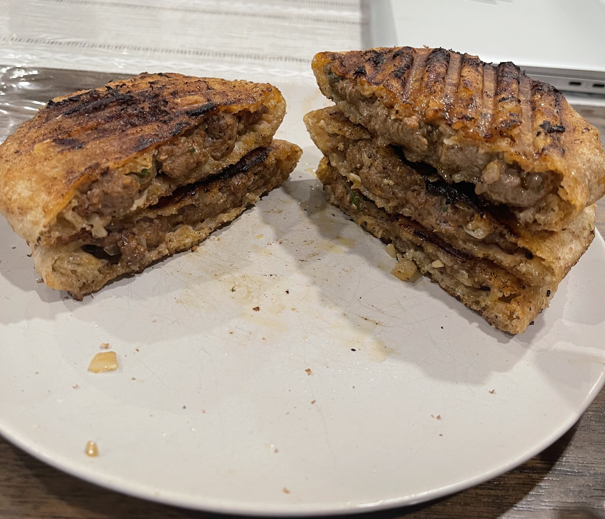

Basel's Shrimp Fried Rice

Description
This recipe is Basel's take on the popular Palestinian dish, Arayes. It's typically served as a side dish to grilled meats however it's still good enough to stand out on it's own. It tastes absolutely incredible, is diet friendly and extremely filling!
Ingredients:
- Yellow Onion
- Jalapeno/Hot Chillies
- Garlic
- Ground beef (Lean or Regular)
- Paprika
- Cumin
- Onion Powder
- Garlic Powder
- Salt
- Pepper
- Thick Pita bread
- Olive Oil
Steps:
- Finely cut your onions into small pieces and, using paper towels or a clean kitchen towl, squeeze as much moisture out of the onion as possible
- Finely chop up your Jalapeno/Hot Chillies into small pieces.
- Place your onion, Jalapeno/Hot Chillies, and grated garlic onto a cutting board and cut everything up together several times so that everything is finely chopped and mixed well together.
- Add this mixture to a large bowl with your ground beef and add paprika, cumin, onion powder, garlic powder, salt, and black pepper. Mix everthing together using your clean hands or a spatula. Keep mixing until everything is incorporated evenly
- Cut your pita bread in half and open the pocket. Stuff your beef mixture into the pocket but make sure that you don't let the bread break. The goal is to fill up the pita all the way to the top of the bread. Repeat with the remaining filling to create several pockets.
- Heat your grill plan to medium high. While waiting for it to heat up, cover both sides of the arayes with olive oil. When the grill is ready, cook the pockets until there is a good char and toast on the side for 5 minutes then flip and cook the other side for another 5 minutes. Repeat this process for all of the pockets you have prepared and serve with your favourite sauce.